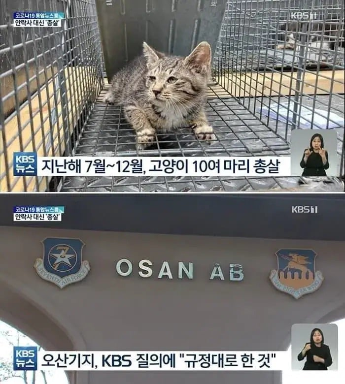
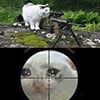

153 · 13 · 1 시간 전 · 원문

길고양이 포화 문제로 골머리 앓자 즉결총살 해버림 ㄷㄷ
수집 당시 댓글 13개
Lumix · 1 시간 전
설마 총살일까 보니 진짜네 ㄷㄷㄷ
우두루 · 55 분 전
Matitd · 45 분 전
걍 죽이는게 맞음
조비에비에이샨 · 45 분 전
짬타이거
sitiydu · 42 분 전

NoSugar · 40 분 전
IIlIIllllI · 37 분 전
손도깔끔
깨붕잉 · 32 분 전
에공 · 30 분 전
굳
포스코4조2교대 · 30 분 전
쌀포대애 죄다 쳐넣어서 저수지에 던져 수장시키는게
ㄴㅉ · 28 분 전
쌀라면 · 7 분 전
프폭도 · 5 분 전
공기총 쐈을까 실탄 쐈을까

설마 총살일까 보니 진짜네 ㄷㄷㄷ